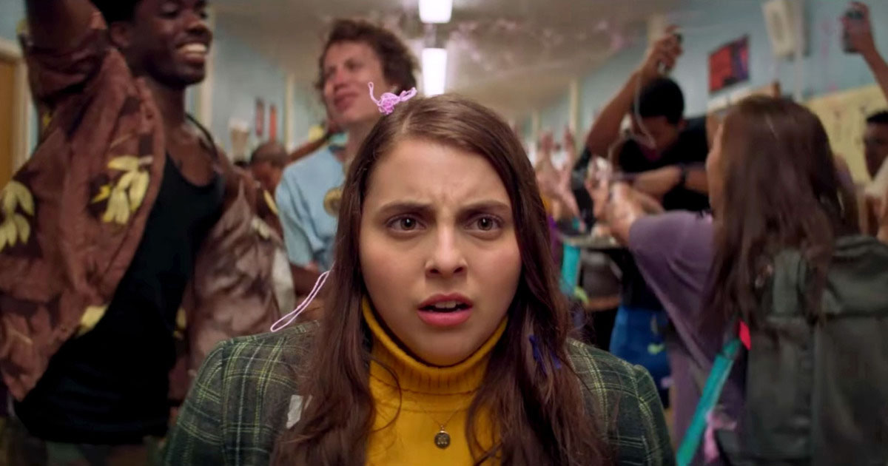
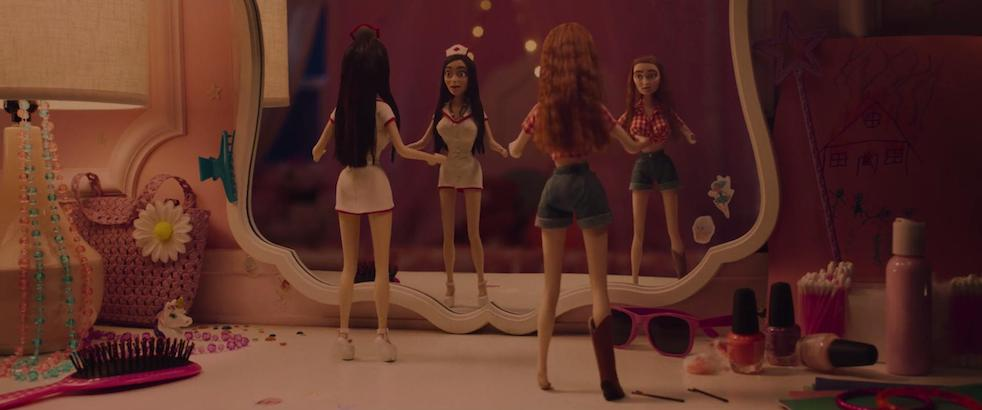

Cinematography
The cinematographer of Booksmart was Jason McCormick. Throughout the film, we see a lot of blues, yellows, and browns/oranges. The film also has a slightly faded quality to it that makes it feel like a classic while simultaneously radiating 2019 energy. Let’s talk about the importance of colors in the film.
- Blues: cold, isolation, cerebral, melancholy, passivity, calm
- Yellows: madness, sickness, insecurity, obsessive, idyllic, naive 
- Browns/Oranges: warmth, sociability, friendly, happiness, exotic, youth
- Pinks: innocence, sweetness, femininity, playful, empathy, beauty 
In the scene of Molly’s freakout when she finds out that her partying peers also got into top universities, the walls all around her, in the bathroom, and in some parts of the hallway, are blue, representing her isolation in that moment as she’s experiencing a mental freakout.
We also see blue in the dance sequence between Molly and Nick. There are some other colors that appear in that scene (which we’ll discuss further in a moment), but the transition to blue in the middle of their dance also represents their isolation from everyone else in the party at that moment. It is only the two of them that exist in Molly’s imagination and no one else matters. It also represents a sense of calmness, as Molly imagines this closeness between her and Nick that we hadn’t seen before in the film.
Ah, the magnificent pool scene. The main color throughout this scene is blue, and it highlights the calmness that Amy feels as she’s swimming through people in the water. The blue also represents passivity, as Amy is quite literally passing through a bunch of people unnoticed and unbothered. At the end of the pool scene, we see the moment Amy sees Ryan and Nick together, and the color of the scene remains blue, but gets slightly darker. The blue is still very fitting at this part because it represents Amy’s sadness, not only for herself but for Molly, because both of them had been misreading the situation all along.
Blue is also pretty consistent in the attire of Molly and Amy throughout the film. Blue is said to be a color that represents cerebral, and I think this is fitting because Molly and Amy are both brainiacs. They’re intelligent women and students who are headed to Ivy League universities. They’re also both generally calm people, and it seems as though they have been pretty passive throughout most of their four years in high school, as they’ve stayed out of trouble and avoided partying like most of their peers.
In the scene where Molly is freaking out, we discussed the blues in the background, but it is also important to note the color yellow on her shirt. In this scene, Molly is mentally going insane and we see her express this as she walks through the hallway yelling at her peers to ask them where they’re going to school. We can tell that she’s desperate for this information, as she goes around asking nearly everyone for an answer, and it goes to show this obsession she’s had with the idea of her success and superiority.
We also see the combination of blue and yellow present in the graduation gown and stoles at the end of the film. We talked about the meaning of the blues to represent cerebral and melancholy, highlighting the smart students and the sort of sadness that naturally appears on graduation days, but what the yellow adds to this is a sense of naiveness, because these students are young and naive, and also blissfulness, because they’re getting out of high school!

Booksmart is tinted with brown and orange throughout the film, but some scenes where it is more explicitly present are in the scene of the party where Amy is singing karaoke, in Amy’s bedroom when she’s getting ready for the night with Molly, and in the scene where Amy and Hope try to have sex. The brownish orange colors in these scenes represent many things: Molly and Amy being more social than they’ve ever been by going to multiple parties in one night, happiness (particularly from the moments of dancing and laughter in the film), the unbreakable friendship between Molly and Amy, and above all, the youthfulness of all the characters in how they navigate conflict, adventures, friendships, and sex at this point in their life.
The color pink is another one that makes consistent appearances throughout the film. We see pink in the bedroom color of the doll scene where Molly and Amy are experiencing their drug hallucination. The pink in this scene highlights femininity and playfulness, just as the dolls themselves do. It’s also sort of a darkened pink scene, perhaps to represent that it’s not a typically girly or playful scene but one where Molly and Amy are experiencing panic and entrapment.
We also see the color pink in the scene where Amy is singing karaoke at Nick’s party. This scene was beautiful because we see that Amy sings really well, the audience loves her, and she’s genuinely enjoying herself despite being shy at first. The pink in this scene was important as it shows Amy’s playfulness, her ability to let loose, have fun, and enjoy this period of her youth.
Pink, of course, is also present in Molly and Nick’s famous dance sequence. The variety of colors in this scene represents the abundance of emotions for Molly, but the pink in particular highlights the sweetness, playfulness, and beauty of this scene. It’s an innocent imagination that Molly has when she first arrives at the party and it really shows how much of a romantic she actually is.
Source about the meanings of colors in film: How Filmmakers Use Color to Set the Mood of a Film